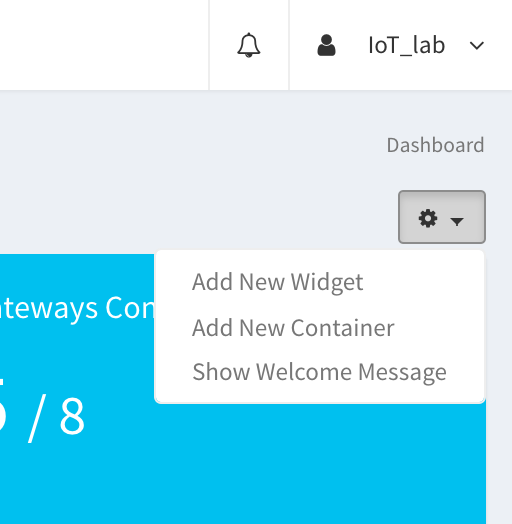
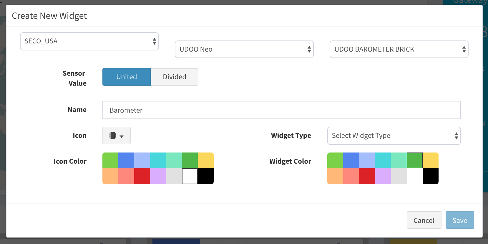
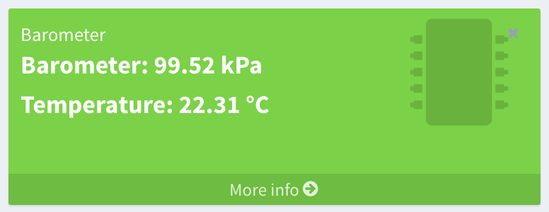
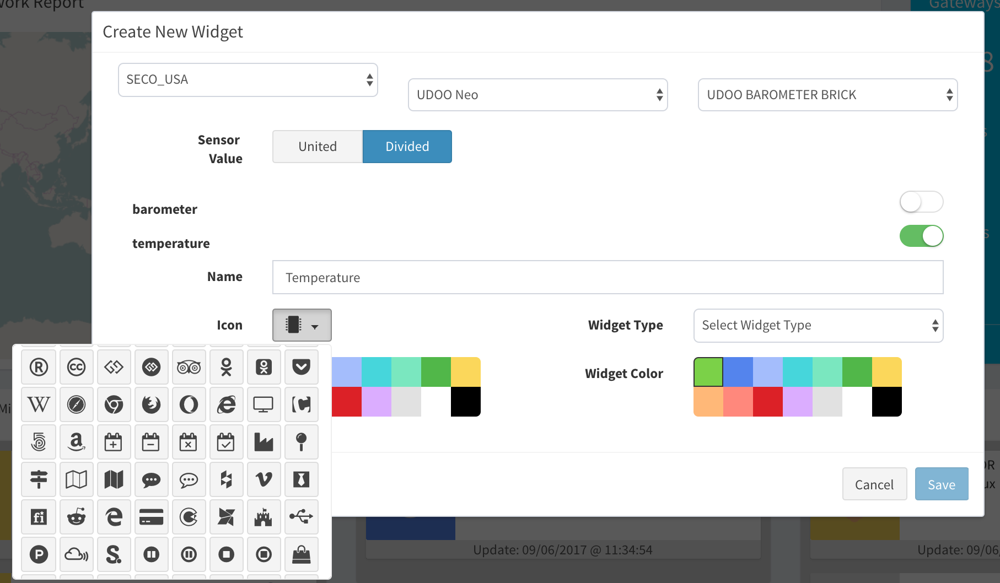
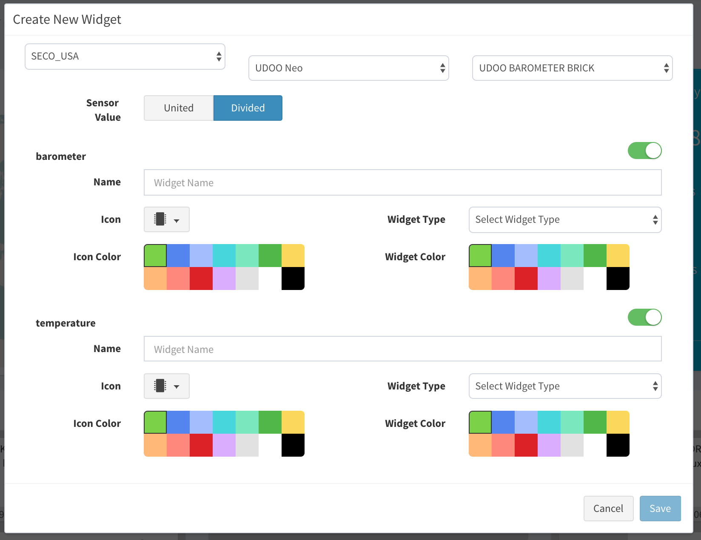
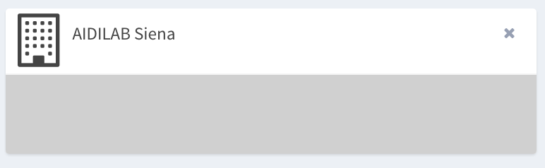
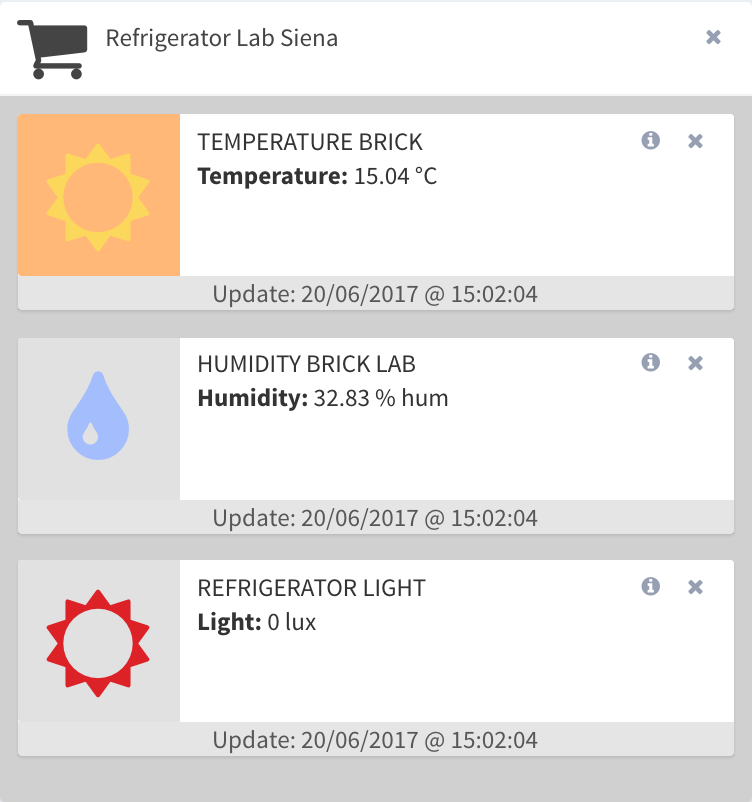

UDOO IoT Documentation
UDOO IoT Documentation
Widgets and Containers
A Widget is a customizable elements you can use to set your dashboard. You can choose a sensor connected to the network to show data inside the Widget.
A Container is basically an element that can contains more widgets to have a clear organization of your widgets.
By clicking on the setup icon in the dashboard, you can add widgets and containers.
Adding Widgets
After selecting Add New Widget, a popup will appear. Here you need to select:
- the gateway that contains the sensor whose data you want to view in the widget.
- the device that contains the sensor whose data you want to view in the widget.
- the sensor whose data you want to view in the widget.
So insert the other parameters:
- the display name you want to assign to the sensor.
- the icon you want to assign to the sensor.
- the type of the widget. It could be a small or medium.
- the icon and widget colors combination to give the widget a pleasant look to see.

Widget Types
The Widget can be of two types:
- Small
- Medium
There are some Bricks that return the values of more than one sensor (e.g. The Humidity Sensor returns data from Humidity sensor and Temperature sensor). For the Bricks that have more sensors, you can select two kind of visualizations:
- United
- Divided
If you select United, a widget will be created that has all the values of the Brick’s sensors, as show in the figures below
 If you choose Divided, you can split the sensors of a Brick into different widgets. In the figure below, is picked just the temperature sensor of the Barometer Brick.
In figure below, are picked both
Adding Containers
For adding a container, push on the setup icon in the dashboard, and then select Add New Container, a popup will appear. Here you need to select:
- a name for the container
- the icon you prefer
Now you have a new container on your dashboard.
You can drag the small widgets into the container for having an optimal organization of the sensors.
